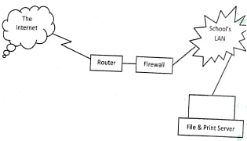
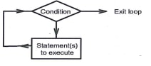
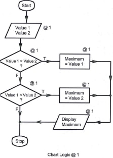
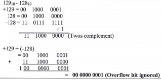

Paper1
1. State two reasons for the increased use of laptop computers in government offices. (2 marks)
2. Computer network technicians prefer to use command-line based operating system when configuring networks. State three reasons for the preference. (3 marks)
3. State three measures that should be put in place in a computer laboratory to safeguard users’ health. (3 marks)
4. State three ways in which barcode readers may be used in schools.(3 marks)
5. State three advantage of flat panel monitors over cathode ray tube monitors as used in computers. (3 marks)
6. State three possible reasons for the extinction of daisy wheel printers in the market. (3 marks)
7. State three ways in which an operating system secures a computer system. (3 mark)
8. A law firm prefers to use hard copy output over soft copy output when handling documents for legal matters. State two reasons for this preference. (2 marks)
9. State the function of each of the following features in a word processor application: (a) Thesaurus;(1 marks)
(b) Comments.(1 marks)
10. With the aid of an example, explain the term multi-level list as used in word processing. (3 marks)
11. Distinguish between real-time operating system and distributed operating system. (3 marks)
12. Explain the function of protect sheet feature in a spreadsheet program. (2 marks)
13. State four computer-based careers introduced as a result of computerised data processing method at the airport. (2 marks)
14. In a spreadsheet, the formula =If(A1>10, A1*77, A1*50) is entered in a cell. Interpret the results. (3 marks)
15. State a stage in systems development life cycle where each of the following activities are carried out:
(a) identifying the technologies that may be used in a proposed system; (1 mark)
(b) identifying shortcomings of a system; (1 mark)
(c) preparing the system migration plan.(1 marks)
. SECTION B (60 marks)
Answer question 16 and any other three questions from this section in the spaces provided.
16. (a) With the aid of a flow chart, describe a loop control structure as used in programming.(4 marks)
(b) Study the following pseudocode and answer the questions that follow.
1. Start
2. Get value l and value2
3. If value I > value2 Then
4. Maximum = valuel
5. Else If value l < value2 Then
6. Maximum = value2
8. Else Go to 9
9. Display Maximum
10. Stop
(i) State the purpose of the pseudocode.(1 mark)
(ii) Draw a flowchart equivalent to the pseudocode. (6 marks)
(c) Distinguish between a source program and a compiler as used in computer programming.(4 marks)
17. (a) (i) Explain the term search engine as used in the Internet.(2 marks)
(ii) Peter intends to download a movie from the Internet.
State the three factors that may determine the total time taken to complete the download. (3 marks)
(b) Wakulima online is an organisation that runs a web based system for assisting farmers to obtain market for their farm produce.
State four technological reasons that may cause a farmer not to access the organisation’s system. (4 marks)
(c) Explain a situation when each of the following Desktop Publishing program features may be used when creating a publication:
(i) cropping;(2 marks)
(ii) transparency.(2 marks)
(d) List two areas where infrared waves are used in data communication.(2 marks)
18. (a) State four activities of the planning stage of systems development. (4 marks)
(b) Explain a circumstance when each of the following feasibility studies are carried out during systems development:
(i) Technical;(2 marks)
(ii) Economic;(2 marks)
(iii) Schedule.(2 marks)
(c) Table 1 and Table 2 are related tables in a database. Use them to answer the questions that follow.
Table 1
(iii) Explain two benefits of enforcing referential integrity in the database. (4 marks)
19. (a) Describe each of the following validation checks as used in data processing:
(i) Preserve check;(2 marks)
(ii) Data type check;(2 marks)
(iii) Check digit.(2 marks)
(b) Write each of the following abbreviations in full:
(i) BCD;(1 marks)
(ii) EBCD;(1 marks)
(iii) ASCII.(1 mark)
(c) Using 10 — bits binary number system, perform the following decimal operation using two’s complement (6 marks)
l2910 12810
20. (a) The figure shows a network design. Use it to answer the questions that follow.

(i) Explain the function of each of the following in the network. I Router;
II Firewall;(2 marks)
III File server.(2 marks)
(ii) State two categories of software that must be installed in a computer so that users can use it to access the internet. (2 marks)
(b) State four ways in which computers may be used to manage data in a research environment.(4 marks)
(c) Some computer companies have opted to use the Internet to provide shared processing resources and online application services to users.
State three advantages that this approach will have on their customers. (3 marks)
They are small and fit in a small storage space. They are light weight hence can be carried to areas where their services are required. The monitor, system unit, keyboard units are attached together hence making its use to be convenient. Rechargeable / backup battery. Any 2 x 1
2. Reasons for the use of command — line interface OS
They do not take up a lot of memory hence boot faster than the GUI OS. They have direct access or most hardware devices. They are cheaper to acquire as some can be downloaded free of charge. They can run on lower —bit hardware systems such as 32-bit computers. Any 3 x 1
3. Measures to be put in place in the laboratory to safeguard user health.
All power cables must be insulated and hidden from users. The furniture used must be of standard computer furniture. The room should be lit with adequate lighting. The room must be ventilated. Computer monitor should be fitted with antiglare to filter excess light rays emanating from the monitor. Avoid slippery floors/cemented floors. Controlling dust.
4. Ways in which barcode readers can be used in a school.
To take inventory of items in the school. To keep track of employee login log out. Used to transact business in the library. Used to keep track of movement of goods.
5. Advantages of flat panel monitors.
They are compact and light weight; They consume less power; They do not suffer from geometrical distortions; They do not cause eye fatigue. They support many advanced technologies; They can be made in almost any size and shape; They support higher resolution. Low heat radiation.
6. Reasons why daisy wheel printer are in extinct.
They supported one font size and font face; They were monochrome printers; They produced noise while printing; They were very slow; Did not print graphics. Had poor print quality.
7. Ways in which an OS secures computer system:
Access controls: Authentication of users in order to access files; Performing regular patches of updates; Creating secure accounts with required privileges; Scrutinizing all incoming and outgoing packets of data through a firewall; Encryption of data, during the transmission stage; Password / biometric analysis; Log files to detect any breach. Any 3 x 1
8. Advantages of hardcopy output.
- They are acceptable as exhibit in cases of litigation. Can be used without a computer. They are difficult to change without leaving any trace. They can be used without power. They can be used without the experience of computer usage. Any 2 x 1
9. (i) Thesaurus:
It is a feature in a word processor that suggest words with similar or opposite meaning to the selected word @l.
(ii) Comments:
It is a feature in WP that allows a user to attach a remark about the selection @l.
10. Multilevel list:
It is a format style that shows the listed items of different levels rather than one at one level.
Each level has different indentation and numbering style @2.
Example (Accept any)
1. Chapter One
Introduction
Definition of terms @l.
11. Distinction between real-time and distributed OS.
Real-time OS reads information from input devices and must respond within a short duration of time to ensure correct performance. Distributed OS distributes computation among several physical processors which do not share memory or clock.
12. Function of protect sheet:
It is a feature used to prevent unwanted changes to be made on the data contained in a sheet by limit the ability to make changes.
13. Computer based careers created by introducing computerized data processing.
System analysts Hardware technicians Data entry clerks Programmers Networks technicians
Database administrators
Web designers Network administrator
14. = If (A1 > 10, Al * 77, Al * 50)
Compares the value in cell Al If it is greater than 10, if comparison is True, the results of operations Al * 77 is displayed, if it is False the results of the operations Al * 50 is displayed.
15. (a) Identifying technologies that could be used in the system.
— System ana1ysis/ information gathering/problem recognition (@ 1)
(b) Identifying the shortcoming of the old system
— Problem definition
(@ 1)
(c) Prepares the software migration plan
— Implementation stage (@ 1) 3
Section B (60 Marks) Marking Scheme
16. (a) Looping is the control structure that allows a block of code/statements to be repeated until a certain condition is fulfilled. @ 2 marks

Accept any type of looping control structure
(b)
(i) The pseudocode compares two values and output one of the two which is greater
(ii) 
(c) Distinction between a source program and compiler
Source program is the original computer based instructions written by a programmer in a programming language while
A compiler is a program that processes statements/instructions and translates them into machine language.
17. (a) (i) Search-engine
It is a web-based application used to locate for an item or information from world wide web.
(ii) Factors that affects duration of download
The size of the video The band width of the media used Availability of network Other activities that may be running in the computer. Other restrictions enforced in the computer The restrictions by the ISP Speed of computer (Any 3 @ l)
(b) Causes of Wakulima system’s failure
Lack of power supply to the system servers. Network infrastructure breakdown/poor network coverage/lack of connection. Program failure in the system/malware (virus). Hardware failure in the system. Human action which could be accidental or intentional. Lack of access rights. System overload (Any 4 @ 1 mark)
(c) (i) Cropping
Used when handling a graphic and there is a need to remove some of the portions in the graphic.
(ii) Transparency
Used when there is a need to make the background of a graphic to be visible.
(d) Areas where infra-red radio waves are used.
TV remote control communication; DVD remote control communication Communication between peripheral devices and the computer Data link over short distance using mobile phones Radio remote control Remote locking / opening doors/devices
18. (a) Activities at the planning stages
Identify opportunity for the new project. Analyse feasibility to establish the viability of the project. Develop a work plan. Identify appropriate staff to work in the project. Control and direct the project.
(b) (i) Technical Feasibility
Meant to determine whether the proposed solution is technically practical/establish whether the technology is available /expertise is available. (@ 2)
(ii) Economic Feasibility
Meant to establish whether the proposed system will be cost effective. (@ 2)
(iii) Schedule Feasibility
Meant to establish whether the system can be implemented within an acceptable time kame. (@ 2)
(c) (i) Primary keys in the table Table 1 : Dept code @
Table 2 : Student’s Registration No. @
(ii) Benefits of referential integrity in the table
No record can be added to the table 2 if its corresponding record in Table 1 does not exist. No record in Table 1 can be deleted without first deleting associated records in Table 2. Reduces data redundancies. Prevent deletion of related tables. (Any 2 x 2)
19. (a) (i) Preserve check
It is a measure placed used to ensure that data item is in its original status. (@ 2 marks)
(ii) Data type check
It is a measure that ensures that correct data type is entered for each field. (@ 2 marks)
(iii) Check digit
This is a number calculated by the computer to make sure that the other numbers in a sequence have been entered properly. (@ 2 marks)
(b) (i) BCD
Binary Coded Decimal
(o i)
(ii) EBCDIC
Extended Binary Coded Decimal Interchange Code.
(iii) ASCII
American Standard Code for Information Interchange

20. (a) (i) I. Router It is the device meant to forward data packets between computer network in the school and the internet. (@ 2 marks)
H. Firewall
It is a device that prevents unauthorized access to or from a private network (school’s LAN) (@ 2 marks)
III. File server
It is a computer attached to a network whose purpose is to provide location for shared disk access (shared storage of computer files). (@ 2 marks)
(ii) Software to be installed in a computer
Network operating system Browser/Mozi11a,firefox Necessary system drivers to supports installed hardware
Protocols(SMTP,HTTP) (Any 2 @ 1 mark)
(b) Use of computers in research for data management Used for data manipulation; Computers aid in data capturing; Computers can be used to store researched and analysed data; Information in computers can be a secondary source of data; Computers can be used to generate reports; Computers can be used to communicate researched work. (Any 4 x 1)
(c) Advantages of online application services and shared processing resources.
Users will not be required to have powerful processing devices; Users can access the services from anywhere in the world; Users can access services at any time (24/7); Users can offload their data to the cloud infrastructure; Users can collaborate with remote users to process the data; The approach will cut out high cost of hardware; Sharing of resources; Faster access to service; Cost effective; Orders are made without going to the shop. (Any 3 x 1)